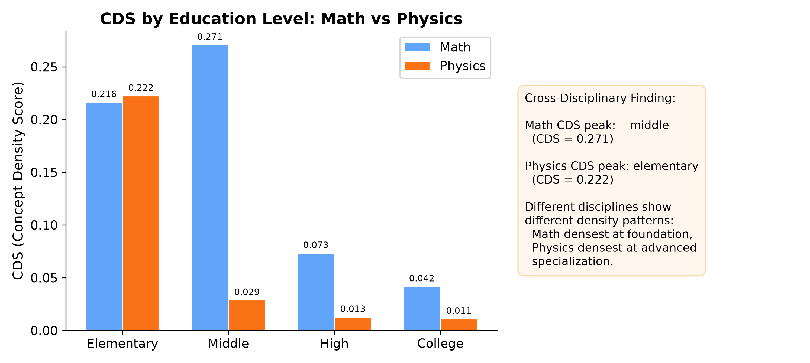
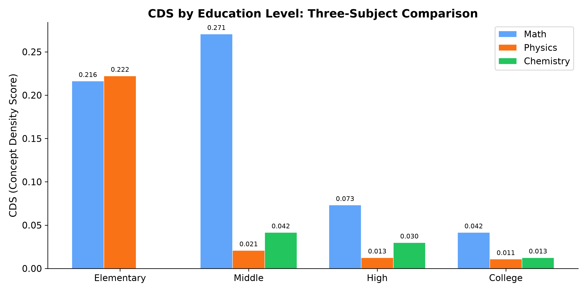

How do different languages and education systems organize the same knowledge?
A cross-lingual, cross-disciplinary framework for measuring structural differences in educational knowledge organization.
Three complementary lenses on knowledge organization
Question: How do different languages organize the same knowledge?
Question: How do different subjects organize their knowledge?
Question: How do different education systems organize curricula?
180+ textbooks across 3 languages, 3 disciplines, 4 education systems
574 concepts, 3,538 relations across 68 textbooks. Covers arithmetic through advanced calculus. Validated against 4 national curricula.
366 concepts, 383 relations across 94 textbook versions. Covers mechanics through quantum physics. Cross-validated with NRW curriculum.
220 concepts, 215 relations across 18 textbook versions. Covers general chemistry through organic chemistry. Curriculum-aligned with NRW.
| System | Country | Disciplines | Coverage (Math) | Trajectory |
|---|---|---|---|---|
| Kernlehrplan NRW | 🇩🇪 Germany | Math, Physics, Chemistry | 12.7% | → Selective alignment |
| UK National Curriculum | 🇬🇧 United Kingdom | Math, Science | 37.3% | → Moderate alignment |
| US NGSS + CCSS | 🇺🇸 United States | Math, Science | 17.2% | → Low alignment |
| 中国国家课程标准 | 🇨🇳 China | Math, Physics, Chemistry | 95.4% | → Near-complete coverage |
Renjiao K-12, Tongji Analysis, Sichuan University, Peking University, Ma Wenwei, Cheng Shouzhuo, Zhao Kaihua, and 25+ more.
Khan Academy, CK-12, Stewart Calculus, Halliday Resnick Walker, Griffiths, Feynman Lectures, AP Physics, IB, IGCSE.
Duden, Lambacher Schweizer, Westermann, Cornelsen, Klett, Dorn-Bader, Tipler, Demtröder, Papula, Fischer.
Four metrics + gold standard validation
Human-annotated gold standard covering social concepts and mathematical concepts across 3 languages, evaluated against qwen-plus extraction.
| Domain | ZH F1 | DE F1 | EN F1 | Overall | n |
|---|---|---|---|---|---|
| Social Concepts | 0.974 | 0.949 | 0.882 | 0.939 | 72 |
| Mathematical Concepts | 0.857 | 0.506 | 0.711 | 0.674 | 20 |
| All | 0.974 | 0.949 | 0.882 | 0.939 | 92 |
| Rank | Model | Overall F1 |
|---|---|---|
| 🥇 | hy3-preview | 0.674 |
| 🥇 | mimo-v2.5-pro | 0.674 |
| 🥉 | qwen-plus ★ | 0.666 |
| 4 | qwen-max | 0.661 |
| 5 | mimo-v2.5 | 0.628 |
| 6 | kimi-k2.6 | 0.626 |
| 7 | qwen3.7-max | 0.614 |
| 8 | qwen3.5-plus | 0.613 |
| 9 | deepseek-v4-flash | 0.608 |
| 10 | deepseek-v4-pro | 0.593 |
| 11 | glm-5 | 0.592 |
| 12 | glm-5.2 | 0.591 |
| 13 | glm-5.1 | 0.590 |
| 14 | kimi-k2.5 | 0.588 |
| 15 | minimax-m3 | 0.580 |
| 16 | qwen3.6-plus | 0.577 |
| 17 | minimax-m2.5 | 0.576 |
| 18 | minimax-m2.7 | 0.566 |
| 19 | deepseek-chat | 0.547 |
Quantitative evidence for structural differences in knowledge organization
| # | Finding | Evidence | Metric |
|---|---|---|---|
| F1 | CDS peaks at Middle school (0.271), not Elementary Independently verified across ZH/EN/DE on 574 math concepts |
Middle CDS = 0.271 College CDS = 0.042 |
CDS |
| F2 | Middle → High school density drops 3.7× Knowledge integration collapses after foundational stage |
0.271 → 0.073 | CDS |
| F3 | HDS ≤ 8; 83% of concepts are roots Mathematics is a shallow web, not a deep tree |
Max HDS = 8 Mean = 0.40 |
HDS |
| F4 | Textbook structures converge between ZH and DE (LDS=0.519); DE–EN diverges most (0.938) ZH–DE convergence contradicts simple language-family expectations |
ZH–DE: 0.519 DE–EN: 0.938 ZH–EN: 0.934 |
LDS |
| F5 | LDS ranges 0.519–0.938 across language pairs Cross-language structural similarity is not uniform |
Range: ~0.42 | LDS |
| F6 | Physics peaks at Elementary (0.222), Math at Middle Both follow "early integration, later specialization" pattern |
Math: Middle 0.271 Physics: Elem 0.222 |
CDS |
| F7 | Physics knowledge depth is 2.1× Math Physics has longer prerequisite chains |
Mean HDS: 0.85 vs 0.40 Roots: 64% vs 83% |
HDS |
| F8 | Chemistry also peaks at Middle school (0.042) STEM density pattern is universal |
Middle CDS = 0.042 | CDS |
| F9 | Coverage varies dramatically across systems — CN leads, NRW lowest CN 95.4% · UK 37.3% · US 17.2% · NRW 12.7% |
12.7%–95.4% range | CS |
| F10 | Coverage reveals textbook–curriculum relationship varies by system CN: near-complete; UK: moderate; US/NRW: selective alignment |
CN: 95.4% NRW: 12.7% |
CS |
Key visualizations from the LinguaGraph analysis




Explore the 3D knowledge graph — rotate, filter, compare
The CognitiveSpace visualization lets you explore all 1,160+ concepts in an interactive 3D environment. Switch between zoom/rotate/fly modes, filter by language, toggle discipline layers, and compare cross-lingual knowledge structures.
🚀 Launch CognitiveSpace 3DFrom concept to comprehensive framework
3-student pilot study, 20 gold labels, initial LDS analysis across ZH/EN/DE. Validated the core hypothesis that cross-language knowledge structures measurably differ.
68 textbooks across ZH/EN/DE. MIMO extraction pipeline. First CDS/HDS/LDS measurements. Discovered peak-and-decline density pattern (F1–F5).
94 textbook versions across 3 languages. Cross-validated the CDS peak pattern. Found physics peaks at Elementary vs Math at Middle (F6). Depth is 2.1× Math (F7).
18 textbook versions. Confirmed universal STEM density pattern (F8). Three-discipline comparison complete.
Aligned all three knowledge graphs against NRW, UK, US, and CN curricula. Built the Coverage Score metric. Discovered dramatic coverage differences (F9/F10).
Deep analysis of coverage trajectories. Found system design philosophy drives coverage patterns (exam-driven vs specialization). Three competing explanations evaluated.
Expanded from 20 to 92 gold labels. Benchmarked 19 models. qwen-plus selected as production model (F1=0.939 social, F1=0.882 overall).
Full paper with 3 conclusions, methodology, results, discussion, error analysis. Release v0.2. GitHub Pages deployment. Trilingual READMEs. Comprehensive references.
Preprint manuscript, citations, and related work
Full manuscript covering all 3 research questions, 4 metrics, 10 findings, model benchmarks, and error analysis.
All knowledge graphs, curriculum alignments, and evaluation results available in the repository.
| # | Reference | Role in LinguaGraph |
|---|---|---|
| 1 | Novak & Cañas (2008). Concept map theory. | CDS/HDS theoretical foundation |
| 2 | Ausubel (1963). Meaningful verbal learning. | Assimilation theory — knowledge is structured |
| 3 | Schmidt et al. (2001). Why schools matter (TIMSS). | Curriculum coherence — Coverage Score inspiration |
| 4 | Liang & Heckmann (2013). ZDM 45(6). | Cross-national textbook comparison methodology |
| 5 | Boroditsky (2001). Does language shape thought? | Linguistic relativity — RQ1 background |
| 6 | Siew (2019). Network science in education. | Network analysis of educational structures |
| 7 | OECD (2023). Education at a Glance. | Cross-national curriculum structure data |
@misc{linguaGraph2026,
author = {Rongjing, J.},
title = {LinguaGraph: Cross-Lingual Knowledge Structure Analysis Framework},
year = {2026},
publisher = {GitHub},
journal = {BWKI 2026},
url = {https://github.com/jjjjjjjjnnjnn/BWKI-2026-LinguaGraph}
}